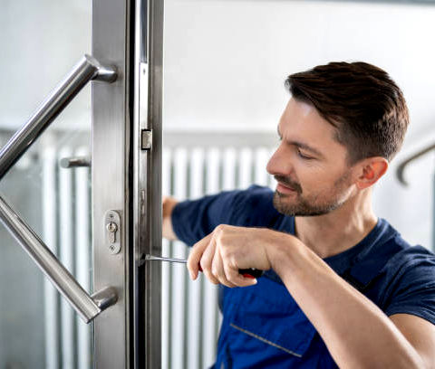
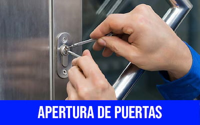
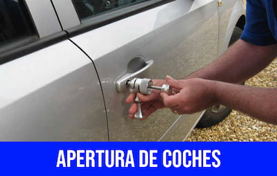
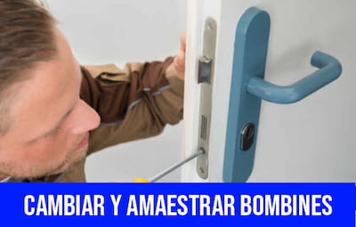
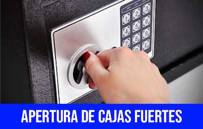
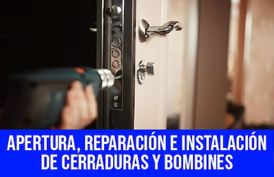
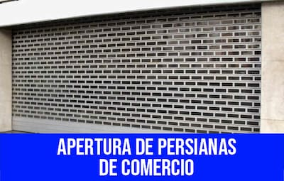
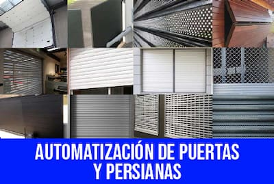

Líderes en San Vicente del Raspeig
Aperturas sin romper
Llegamos en 15 minutos
Presupuesto inmediato
Pago con tarjeta
Cerrajeros al mejor precio
Tabla de Contenidos
- Cerrajeros San Vicente del Raspeig 24 Horas
- Cerrajeros San Vicente del Raspeig Urgentes
- Cerrajeros San Vicente del Raspeig Baratos
- Cerrajeros San Vicente del Raspeig Precio
- Nuestros servicios
- Apertura de Puertas
- Apertura de Coches
- Cambio bombín
- Apertura Caja Fuerte San Vicente del Raspeig
- Instalación de Cerraduras
- Apertura de Persianas de Comercio
- Automatización de Cajas Fuertes
- Cerrajero San Vicente del Raspeig
- Cerrajero de Urgencia
Cerrajeros San Vicente del Raspeig somos líderes, desde hace más de 20 años,en el sector de cerrajeros de emergencia en la localidad de San Vicente Del Raspeig.
Nuestros usuarios confian en los cerrajeros de nuestra empresa. Ya sean clientes vecinos de San Vicente del Raspeig, estudiantes que cursan sus estudios en la Universidad y viven en el municipio, o turistas que pasan unos días en esta bonita localidad alicantina.
Sea como sea, si tienes una emergencia con las llaves de tu casa o piso, y no puedes acceder a tu vivienda, Cerrajeros San Vicente del Raspeig acudirà a cualquier parte de la ciudad en menos de 15 minutos.
¿Nuestros horarios? ¡No tenemos horarios! Nuestros cerrajeros trabajan todos los días y disponemos siempre del mejor cerrajero de guardia para atender tu incidencia de cerrajería. Ya sean las fiestas de Moros y Cristianos, "Paellas", Hogueras o la fiesta de Bienvenida de la Universidad de Alicante, ubicada en San Vicente del Raspeig. ¡No te preocupes! Llámanos y relajate. En breve estarás de nuevo en tu hogar, gracias a Cerrajeros San Vicente del Raspeig.
Cerrajeros San Vicent del Raspeig 24 horas
Cerrajeros San Vicente del Raspeig 24 horas somos su mejor opción si necesita un servicio de cerrajeros a cualquier hora del día, urgente y rápido.
Nuestros cerrajeros San Vicente del Raspeig 24 horas ofrecen a nuestros clientes un servicio de cerrajería profesional y confiable, sin dejar de ser una opción rentable. Nuestros amables y profesionales cerrajeros 24 horas se esfuerzan por ofrecer asesoramiento experto, soluciones a medida y mano de obra de calidad al mejor precio.
Disponemos del mejor personal experimentado para ofrecer todo tipo de servicios de cerrajeros 24 horas. Por ello, somos capaces de satisfacer a los clientes más exigentes, ofreciendo en todo momento una atención personalizada.
Cerrajeros San Vicente del Raspeig 24 horas le ofrecemos un servicio opcional de mantenimiento y asistencia constante, por lo que no tendrá que preocuparse por la seguridad de su hogar o comercio.
La seguridad de los suyos es muy importante para nosotros, por lo que le recomendamos que contacte con nosotros para ofrecer un servicio 24 horas de calidad.
Nuestros precios son los más económicos frente a otras empresas del sector de cerrajeros 24 horas en San Vicente del Raspeig, con una excelente calidad-precio.
Nuestros clientes nos recomiendan enérgicamente, ya que llevamos a cabo un trabajo transparente y disponible las 24 horas.

Cerrajeros Urgentes San Vicente Del Raspeig
Cerrajeros San Vicente Del Raspeig urgentes realiza el cambio e instalación de cerraduras, bombines y cerrojos de todos los modelos, apertura de puertas de todos los tipos de cerraduras, apertura de cajas fuertes, coches, puertas atascadas de garaje y candados de moto, reparación de persianas, motorizaciones y puertas basculantes, instalación de automatismos en persianas metálicas de locales y puertas particulares, sustitución de cerraduras o circuitos electrónicos.
Además realizamos la inicialización de cajas fuertes restableciendo el código de seguridad, amaestramiento y duplicado de llaves, desalojos, instalación de sistemas de seguridad como anti-palanca o anti-pánico, instalación de cerraduras o cerrojos en su mobiliario de oficina, vitrinas, archivadores o consignas, instalación de motores de persianas enrollables, reparación de cierres metálicos de comercio y el estudio e instalación de cualquier clase de lector de proximidad.
Nuestro equipo profesional de Cerrajeros San Vicente del Raspeig son profesionales en la instalacion, reparacion y sustitucion de todo tipo de cerraduras de puertas, tales como:
- Cerraduras de puertas de uPVC: en puertas delanteras y traseras.
- Cerraduras para puertas de garaje.
- Cilindros de cerradura en puertas delanteras y traseras.
- Cerraduras de embutir.
- Cerraduras Yale en puertas delanteras y traseras.
- Cerraduras para puertas de patio.
- Cerraduras estándar.
- Cerraduras inteligentes en San Vicente del Raspeig.
- Cerraduras de entrada sin llave.
- Cambio y reemplazo de cerraduras de puertas.
Trabajamos únicamente con las mejores marcas del sector de la cerrajería, tales como: FAC, TESA, FICHET, GA, BATON, CVL, MOTTURA, LINCE, AZBE o MUL-T-LOCK entre otras que nos proporcionan seguridad, durabilidad y una total garantía, para nuestros clientes y para nosotros.
Cerrajeros Sant Vicent del Raspeig Baratos
En Cerrajeros San Vicente del Raspeig ofrecemos un servicio de cerrajeros baratos con respuesta rápida las 24 horas para reparaciones de daños por robo y llaves perdidas. Cerrajeros de San Vicente del Raspeig baratos trabajan de forma profesional para hogares, empresas, comercios o la misma Universidad. También bares, restaurantes, clubes nocturnos, tiendas, oficinas y almacenes. Aunque seamos los más baratos, siempre ofrecemos la máxima calidad. Estaremos con usted en menos de 30 minutos de su llamada inicial, totalmente equipados y listos para reparar o reemplazar su cerradura rota.
Cerrajeros San Vicente del Raspeig Precio
Cerrajeros en San Vicente del Raspeig ofrecemos el mejor precio del mercado. En nuestra empresa de cerrajeros siempre tendrá la mejor relación calidad-precio de San Vicente del Raspeig. Ajustamos nuestros presupuestos según las necesidades de nuestros clientes, y es por eso que siempre ofrecemos el mejor precio ¡No tenemos competencia! No encontrará otra empresa de cerrajería más barata que nosotros.
Por nuestro precio, pero sobretodo por nuestros inmejorables servicios, es por lo que somos los primeros cerrajeros que elijen nuestros clientes de San Vicent Del Raspeig cuando necesitan un servicio de cerrajería, ya que no olvidamos nuestra profesionalidad en ningún momento.
Nuestros Servicios
Existen muchas ocasiones donde se necesita la presencia de nuestros cerrajeros San Vicente del Raspeig para casos de emergencia. El ejemplo más común es cuando las personas dejan las llaves adentro de un domicilio o un coche, en este último caso, las persona para evitar romper la ventana, perjudicar el sistema de seguridad o dañar la cerradura del vehículo, prefieren llamar a un experto y esa es la mejor recomendación, más aun si este tipo de emergencia te ocurren durante horas de la madrugada.
Sin embargo, no es el único motivo, existen personas que por error parten las llaves dentro de las cerraduras quedando encerradas en sus hogares, algo que a simple viste parece totalmente complicado de solucionar pero que las personas que ofrecen servicios de cerrajería urgente pueden solventar con tiempo y destreza.
Entre los servicios que ofrecemos Cerrajeros San Vicente del Raspeig, puede encontrar los siguientes:
Apertura de puertas en San Vicente del Raspeig
¿Está encerrado dentro o fuera de su casa, oficina, negocio o automóvil en cualquier lugar de San Vicente del Raspeig ? Necesita rápidamente una apertura de puerta. Entendemos que quedar bloqueado puede ser realmente frustrante, ya sea desde su casa, oficina, negocio o automóvil, pero no debe preocuparse. No importa la hora del día y uno de nuestros cerrajeros de emergencia locales estará con usted rápidamente para realizar una apertura de puertas en San Vicente del Raspeig, las 24 horas del día, los 7 días de la semana.
Es muy frecuente que este tipo de inconvenientes surja a raíz de falta de mantenimiento en las cerraduras o por la pérdida de las llaves. Sin importar que tipo de puertas sean, realizamos apertura de puertas en San Vicente del Raspeig de forma profesional. Un cerrajero de nuestro equipo de profesionales resuelve en escasos minutos este incidente.

Apertura de Coches
¿Imagina por un momento que se trata de las llaves de tu vehículo, que dejaste adentro de él? ¡Ahora imagínate luchando por tratar de abrirlo con tus medios, conocimientos y posibilidades! Por eso la instalación, cambio y reparación de cerraduras debe hacerlo exclusivamente un personal capacitado. Lo mismo ocurre en otra escala si se trata del resguardo de tu familia, casa u oficina. Nada mejor y más acertado que solicitar a alguien que sabe qué hace.

Cambio bombín
¿Deseas simplificar el uso de muchas llaves? Cambiar y amaestrar bombines es tu respuesta. Esto te permitirá una misma combinación para diferentes puertas: ¡la llave maestra en tus manos!

Apertura Caja Fuerte San Vicente del Raspeig
Apertura de cualquier tipo de caja fuerte: .No debes de perder la calma en ningún momento si te llega a suceder este inconveniente. Con la ayuda de nosotros todo estará solventado, puesto que contamos con un excelente grupo de especialistas en apertura de cajas fuertes, que profesionalmente harán de esta labor pan comido.

Instalación de cerraduras en San Vicente del Raspeig
Si lo que requieres es un cerrajero para instalación de cerraduras en San Vicente del Raspeig, no dudes que nuestros trabajadores tienen la capacidad para ello. Conocen perfectamente todo el proceso de instalación de cerraduras y sin duda podrán hacer una instalación correcta y óptima, estética y prolija, pero sobretodo segura para su hogar.
Nuestros cerrajeros en San Vicente del Raspeig son llamados cada día más para abordar profesionalmente los problemas relacionados con la cerrajería, entre los que se encuentra la instalación de cerraduras en San Vicente del Raspeig y sus alrededores. Ya sea por personas que han sido bloqueadas fuera de sus hogares, empresas que necesitan actualizar sus cerraduras a opciones de mayor seguridad y todo lo demás.
Si necesita una instalación de cerraduras en San Vicente del Raspeig, para su hogar o negocio, no dude en llamar a Cerrajeros en San Vicente del Raspeig y nuestro equipo profesional estará con usted lo antes posible para ayudarle con el problema.
Nuestros Cerrajeros en San Vicente del Raspeig están disponibles en cualquier momento que los necesite, y siempre hacen todo lo posible para brindar a nuestros clientes el mejor servicio de instalación de cerraduras, con las mejores marcas, a precios competitivos.
Reparación de cerraduras en San Vicente del Raspeig
¿Necesita una reparación de cerraduras en San Vicente del Raspeig? Ya sea que haya perdido las llaves de su casa o de la oficina , o necesite reparar sus cerraduras , o por cualquier otro problema relacionado con la cerrajería que pueda estar enfrentando, llame a Cerrajeros San Vicente del Raspeig.
Puede confiar en nuestros Cerrajeros en San Vicente del Raspeig están altamente capacitados para brindarle un servicio rápido de reparación de cerraduras. Ya sea que esté bloqueado , necesite reparar una nueva cerradura o simplemente necesite cambiar sus cerraduras.
Conocemos las cerraduras de adentro hacia afuera y nos especializamos en reparaciones de cerraduras, manipulación de cerraduras, selección y entrada de cerraduras, actualizaciones de cerraduras y cambio de llaves para casas y espacios comerciales. Desbloqueamos y reparamos cerraduras defectuosas e instalaremos nuevas cerraduras cuando sea necesario, incluidas: cerraduras Yale, cerraduras de punto muerto, cerraduras Chubb, cerraduras de embutir y cerraduras Mul-t-lock.

Apertura de Persianas de Comercio
La instalación y arreglos de persianas tal vez sea un trabajo menos demandado -aparentemente- pero para quienes usan estos aditamentos, ellos brindan un plus al confort de sus espacios. Por ende los Cerrajeros en San Vicente Del Raspeig saben que su buen funcionamiento forma parte del servicio integral que ofrecen.

Automatización de Cajas Fuertes
Con nuestro servicio de reparación de cerraduras también realizamos automatización de todo tipo de modelos de puertas y persianas. Nuestros clientes de San Vicente Del Raspeig siempre obtienen los mejores resultados. Esta es una de las maneras más recurrentes a la hora de modernizar el hogar o el negocio. Nos adaptamos a la situación de cada usuario ofreciendo las mejores soluciones para automatizar tus puertas o persianas. Trabajamos con materiales diversos y contamos con los mejores especialistas para que puedan brindarte en todo momento un servicio a la altura.
Instalación de sistemas de seguridad en San Vicente del Raspeig
En Cerrajeros San Vicente del Raspeig somos profesionales en la instalación de sistemas de seguridad, la cual podrá tomar la elección de entre una amplia variedad de opciones en cuanto a cerrojos de seguridad para puertas que se adapte a lo que necesita.
- Escudos anti-mordaza
- Cilindros anti-extractor
- Sistemas anti-bumping
- Y antiganzúa entre otros muchos
Cerrajeros San Vicente del Raspeig estamos capacitados y disponemos de la experiencia necesaria para solucionar y aconsejar sobre cualquier sistema de seguridad, y cual se adecuara mejor a sus necesidades, ya sea en su vivienda o comercio.
Los cerrajeros baratos de San Vicente del Raspeig saben cómo manejar todo tipo de candados, incluidos los candados de baja seguridad y los candados de alta seguridad para edificios comerciales como almacenes. Nuestros asequibles cerrajeros arreglarán sus candados rígidos o rotos, harán reparaciones o proporcionarán candados de reemplazo cuando sea necesario en situaciones de emergencia.
Nuestra disponibilidad en Cerrajeros San Vicente del Raspeig.
En Cerrajeros San Vicente del Raspeig ampliamos horario laboral poniendo a su disposición un equipo de profesionales.
Tenga a mano nuestro número de teléfono y llámenos con cualquier tipo de urgencia a cualquier hora del día o la noche, donde será atendido por uno de nuestros profesionales y le enviará de inmediato a uno de nuestros profesionales urgentes para reparar su avería donde nos indique.
Ofrecemos nuestros servicios a domicilios, locales comerciales, administraciones públicas, naves y negocios.
Cerrajero San Vicente del Raspeig
Tener un buen cerrajero San Vicente del Raspeig de confianza es esencial por diversos motivos
- 1.- Disponibilidad y buen precio: Toda buena empresa de cerrajeros que elijas debe de tener disponibilidad y buen precio, esto significa que pueda atenderte aunque sean las 3 a.m. sin que esto signifique pagar una barbaridad.
- 2.- Encontrar un cerrajero de confianza, aun sin haberlo contratado: No vamos a mentirte, la realidad es que aunque en páginas amarillas una empresa de cerrajeros te diga que tiene varias décadas de experiencia, la única forma de saber si son buenos es contratándolos. No confíes demasiado en la publicidad, solo básate en esta para analizar preciso, pero para datos de calidad, pide recomendaciones a tus amigos o familiares, ellos podrán darte información sobre buenos cerrajeros, en los que puedes confiar aun sin haberles contratado.
- 3.- Ten variedad: No tengas solo un cerrajero de confianza, siempre lleva contigo las tarjetas o información de contacto de varias empresas de cerrajeros que hayan cumplido con tus condiciones en cuanto a precio, calidad y disponibilidad, en caso de que esta última condición falle, tendrás más opciones a elegir y no tendrás que apostar por cerrajeros con desconocida calidad que encuentres en páginas amarillas.
Consejo extra: No olvides que muchas de las pólizas de seguros de coche te dan el servicio de cerrajero para coche gratis, normalmente cubren este tipo de eventos un par de veces al año, entonces, no olvides tener este detalle en mente.
Cerrajero de Urgencia en San Vicente del Raspeig
Casi todas las personas han necesitado alguna vez en su vida un servicio de cerrajeros San Vicente del Raspeig para casos de emergencia y precisamente por esta razón, es que nuestro equipo de trabajo siempre se mantiene atento para asistir a cualquier emergencia que pueda amenazar la seguridad de tu familia y de tus propiedades en ese tipo de situaciones.
Servicio de cerrajeros para casos de emergencia durante las 24 horas
Nuestro servicio de cerrajeros San Vicente del Raspeig para casos de emergencia esta disponible para ti durante las 24 horas del día, además de que también estamos a tu disposición durante los fines de semana, ya que una persona no sabe con exactitud cuándo va a necesitar de este tipo de servicios.
Siempre es una buena recomendación tener en cuenta las referencias, bien sea de amigos, familiares o conocidos que hayan sufrido recientemente de alguna emergencia y que puedan darte buenos comentarios de su experiencia anterior, algo que permitirá sentirte en confianza más tranquilo y menos alarmado.
Un verdadero profesional de confianza también te servirá para que la inversión que tengas que hacer para solventar la emergencia sea considerablemente menor, ya que de lo contrario existe la posibilidad de que alguna personas se aprovechen de ese momento incómodo para cobrar más de lo que debería, hasta incluso llegar a estafarte.
Uno de los mejores consejos que te podemos dar, es que no te dejes llevar por anuncios donde ni siquiera tu creas lo económico que cuestan sus servicios, recordando siempre que lo barato sale caro y que en cuestión de seguridad, lo ideal es que te pongas en manos de verdaderos profesionales.
Si usted reside en Alicante capital, no dude en contactar con nuestro servicio técnico de Cerrajeros Alicante AC. Nuestros especialistas le atenderán con urgencia las 24 horas del día y con los mejores precios de la província.
Aperturas 25€: Buzones y Cancelas. No incluye desplazamiento, ni urgencias, ni sábados, ni domingos y ni festivos.